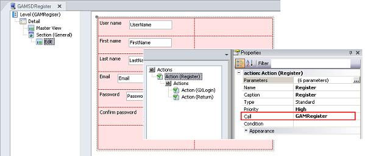

GAMSDRegister object is an entry panel for smart devices applications which is incorporated automatically to the KB when Enable Integrated Security Property is set to Yes. The idea is to enable new users to register to the application, as a consequence, this new user will be added to the GAM repository. The "Register" button, in the smart device screen, has an associated Action. This Action calls a procedure that registers the user in the GAM repository using the GAM API.  Note: GAMSDRegister object is a sample object for the purpose described above, it can be changed or substituted by another one.
|
| Backlinks | |
| GAM Activation Process | |
| GAMSDLogin object | HowTo: Defining Panels in Smart Devices |